料理
ルック「フード」で撮ったものを中心に並べています。

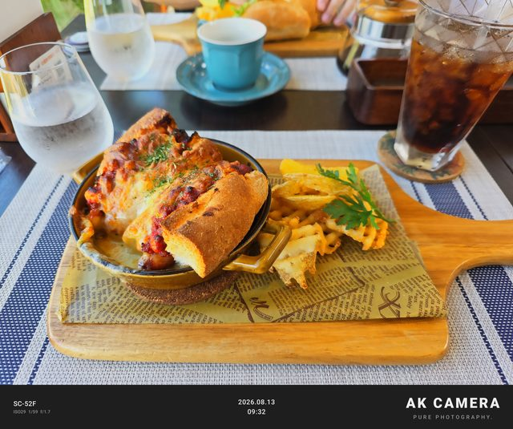


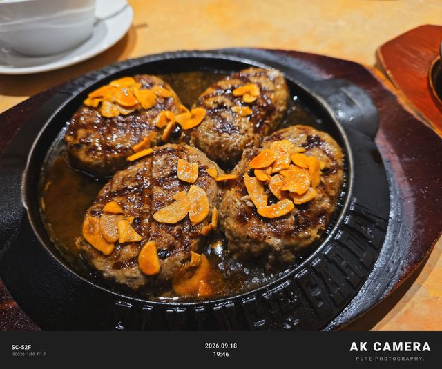


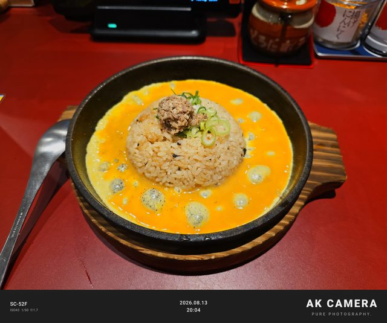


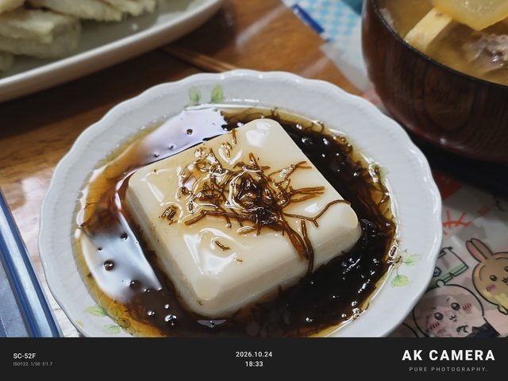

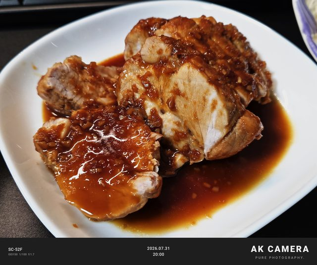


Gallery
AK CAMERA で撮って、そのまま保存された写真です。縮小した以外は手を加えていません。 写真の下には、撮ったときの記録（ルック・合成の枚数・ISO）を写真の中から読んで載せています。 端末はどれも Galaxy S25 Ultra です。 作った本人は料理以外でもよく「フード」で撮っていて、ここに並べた45枚のうち18枚がそうです。
写真をタップすると大きく表示します。位置情報などの撮影データは、このページの画像からは消してあります。
ルック「フード」で撮ったものを中心に並べています。





空の青と、影の中の細部。
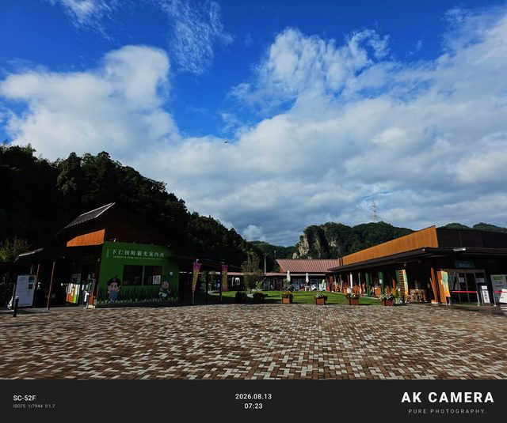


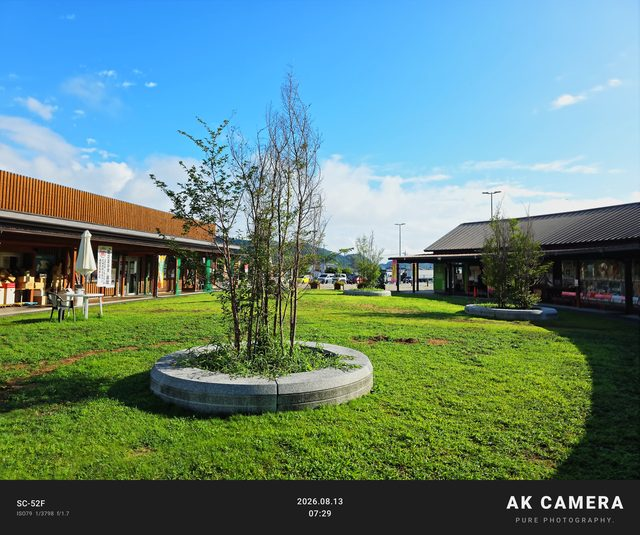

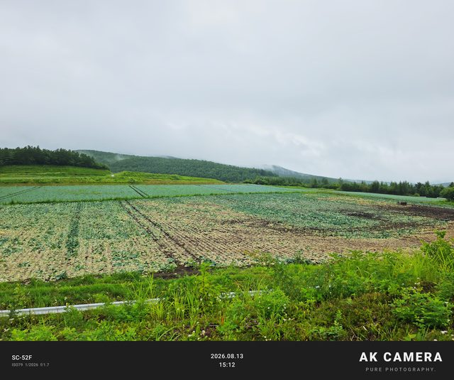


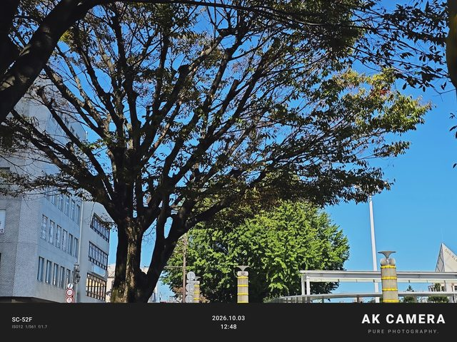
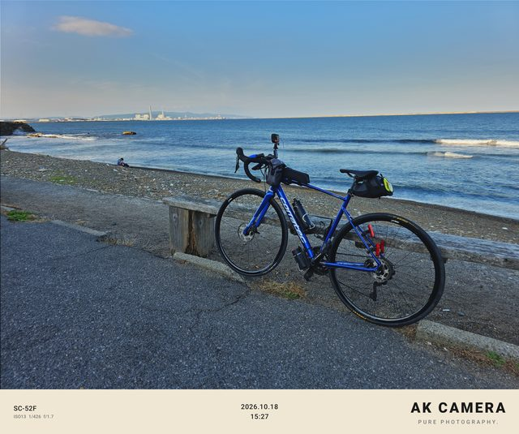

ボディの映り込みと、夕方の光。


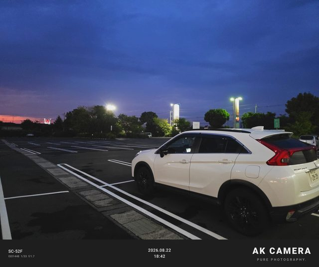


街灯や看板の明かりだけで撮った写真です。


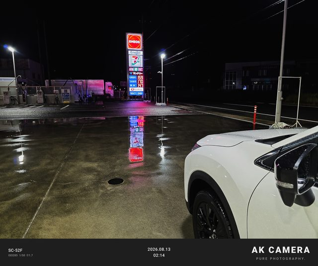


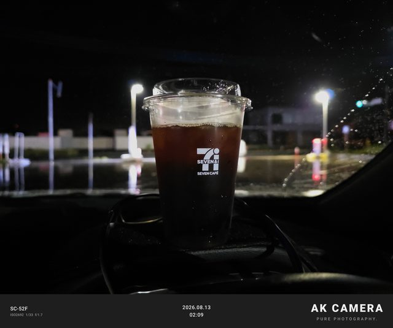
ズームや深度ボケ、室内の写真です。


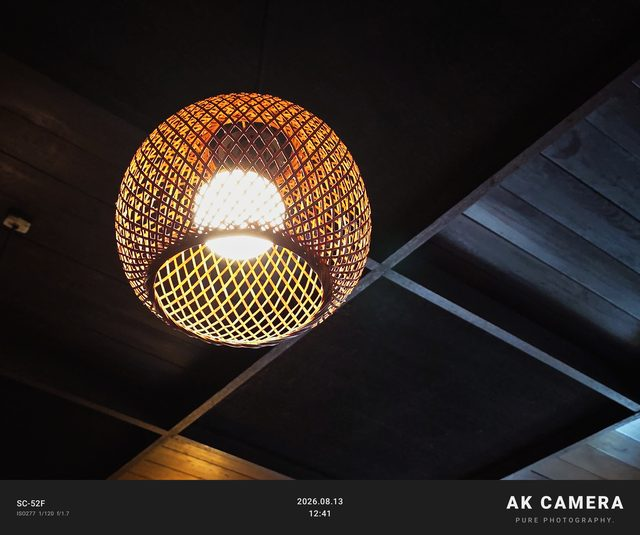

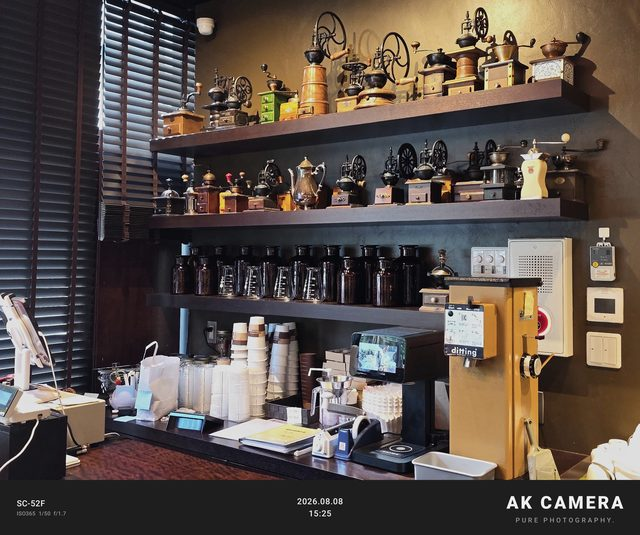
AK CAMERA で撮った写真を X で見かけると、とてもうれしいです。ぬいぐるみや戦利品の写真も大歓迎です。 載せてもよい写真があれば ＠aku_niconico までお知らせください。